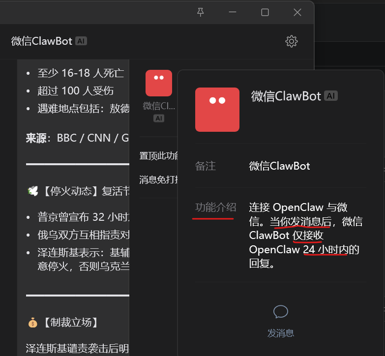

官方文档说明 + BotTalk 的应对方案
以下为微信 ClawBot 功能介绍页面的截图：

简单说来，你通过 BotTalk 收消息时，底层用的是微信 ClawBot 通道，也许微信开放的这个通道是提供给你与 OpenClaw 对话的，所以如果你要保持它畅通、能稳定作为消息接收渠道，就要让它看起来像是聊天。
我们的测试表明：连续收到 10 条消息（最极端快速连续 6 条）如果都不回复，则再发送消息时会被微信限流。此时只要在微信里回复一下立刻恢复——而且实测哪怕隔了 10 天再回复，通道照样恢复，无需重新扫码。也就是说本质上只有"限流"这一种状态，没有"时间到了就解绑"这回事；除非通道彻底失效（极少数情况，页面会有明确提示），否则永远不用重扫。
所以如果你要好好使用它做你的消息接收通道，安全稳定的做法就是收到消息别超过 7-8 条就随便在微信里面胡乱发一个字，我们平台必然立刻给你回复一条消息——这就表明通道又可以连发 7-8 条。
只要你假装在和它对话，它就永远不会失联。
我们自己通常是收到消息，有事没事就回一条，这样我们从未失联过。
这不是 BotTalk 的 bug，是微信 ClawBot 协议的设计限制。所有基于这个通道的服务都面临同样的问题。